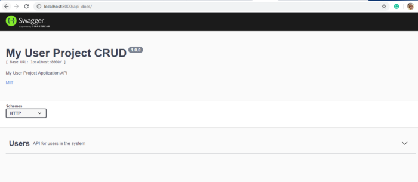
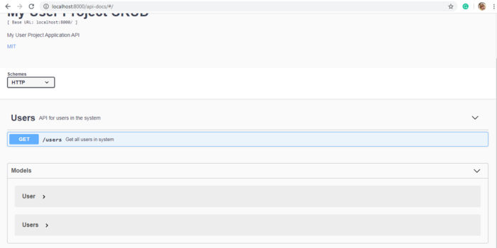
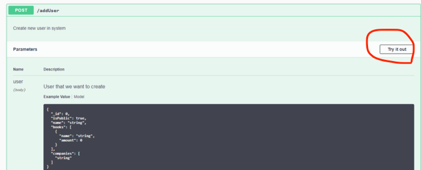

前言
後端API開發完成之後，很重要的一點就是需要讓前端知道怎麼串接，以前好像沒有什麼固定的格式來做API的文件？後來有Swagger API這個東西，其實也出來一陣子了但直到最近才有機會用到，用過後大致上可以記錄一下如何使用以及使用後的想法。
正文
首先下載swagger-ui套件
1
npm i swagger-ui-express
創建json檔案，我叫swagger.json
主要在裡面撰寫API文件，json格式要照著swagger的規則寫程式才會認得～
這邊可以先編寫好api的小簡介，雛形如下：1
2
3
4
5
6
7
8
9
10
11
12
13
14
15
16
17
18
19{
"swagger": "2.0",
"info": {
"version": "1.0.0", //你api的版本
"title": "My User Project CRUD",
"description": "My User Project Application API",
"license": {
"name": "MIT",
"url": "https://opensource.org/licenses/MIT"
}
},
"host": "localhost:8000", //照你的host, port
"basePath": "/", // api的路徑
"schemes": ["http"],
"consumes": ["application/json"],
"produces": ["application/json"],
// 以上是對api document的簡介區
"paths":{/** api在這裡 */}
}跟express串接，啟動程式之後可以在你的localhost看到文件
server.js
1 | const express = require('express') |
啟動localhost:8000/api-docs就可以看到這個畫面
（示意圖）

- 串起來之後回到swagger.json， api 主要的內容會從paths裡面開始
基本的雛形如下：1
2
3
4
5
6
7
8
9
10
11
12
13
14
15
16
17
18
19
20
21
22
23
24
25
26
27
28
29
30
31
32
33
34
35
36
37
38
39
40
41
42{
// paths直接接著剛剛上面定義的produces之後寫下去
"paths":{
"/users": { // api路徑
"get": { // 你要使用的http method （GET/POST/DELETE/PUT/PATCH..）
"tags":["Users"], //大分類標籤
"summary":"取得所有使用者", //摘要說明
"responses":{
"200":{
"description":"OK",
"schema":{
"$ref":"#/definitions/Users" // 這邊就會去抓取下面定義的模型=>（也就是這個api需要的參數＆要輸入什麼）
}
}
}
},
"post": {}, // post用法放裡面
"delete":{}, // delete用法放裡面
"put":{} // put用法放裡面
}
},
"definitions":{ // 模型定義區域開始
"Users": {
"required": [ "name", "id", "company" ], // 必填參數的話，定義於此
"properties": { //定義參數類型
"id": {
"type":"number",
},
"age": { // 這裡也可以填入選填的參數
"type":"number",
},
"name": {
"type": "string",
"example": "chi" // 可以放入範例，參數輸入的值
},
"company": {
"type": "string"
}
}
}
}
}
再度啟動server，可以看到有users的內容了
（示意圖）

補充（個人紀錄）
swagger disable ‘try it out btn’

預設的api文件會有Try it out的按鈕，如果沒有經過處理，按下去是沒有反應的，而我在這邊就想要把Try it out拿掉，
解決的方式如下
1 | const swaggerOpt = { |
是的，這樣就ＯＫ了，再重啟就沒有按鈕囉。
心得：
一開始因為覺得看起來很美觀，整理起來也有固定的格式看起來比較方便而試試看，寫過之後，還是有發現一些限制/缺點:
- 因為json格式的關係，要對資料的時候耗時，容易看錯。
- 對於每個參數無法更詳細的說明，雖然可以用example來表示，但當類型是有固定選項時則會很難解釋，無法直接在模型裡面寫出來，可能就只能寫在description中。
例如users這個api有一個參數是要輸入 上班方式：1=走路, 2=搭公車, 3=騎腳踏車，這個特定的說明就要寫在description。 - json檔案越寫越大包，還沒嘗試如果分不同檔案管理可否讓server啟動成功。
還是會繼續找有沒有其他撰寫api文件的方式，畢竟越方便越好～但目前實現讓文件有固定規格美美的也是不錯的～
資料來源：
How to add Swagger UI to an existing Node.js and Express.js project
更多api寫的方式
How to disable ‘Try it out’ in 3.x #3725